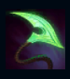
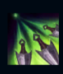
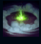
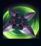
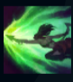

Akali
| Ahri The Rogue Assassin | |
|---|---|
| Release date | 11.05.2010 |
| Class | Assassin |
| Positions | Top,Middle |
| Resource | Energy |
| Range type | Melee |
| Adaptive type | Physical |
| Base statistics | |||
| Health | 575 – 2190 | Energy | 200 |
| Health regen. | 8 – 16.5 |
Energy regen. | 50 |
| Armor | 23 – 82.5 | Attack damage | 62 – 118.1 |
| Magic resist. | 37 – 58.25 | Crit. damage | 175% |
| Move. speed | 345 | Attack range | 125 |
După ce a abandonat Ordinul Kinkou și titlul de pumn al umbrei, Akali luptă acum singură, hotărâtă să devină arma letală de care are nevoie poporul ei. Deși n-a uitat ce a învățat-o Shen, maestrul ei, a jurat să apere Ionia și să-i ucidă inamicii unul câte unul. Nu poți ști de unde va ataca Akali, dar mesajul ei e limpede: toată lumea trebuie să se teamă de asasina fără maestru. |  |
ÎNSEMNUL ASASINULUI Când îi provoacă daune prin vrăji unui campion, creează un cerc de energie în jurul acestuia. Dacă Akali iese din acel cerc, următorul ei atac de bază este îmbunătățit, primind rază și daune bonus. |
||
|---|---|---|---|---|
 |
LOVITURĂ ÎN CINCI PUNCTE Akali aruncă cinci pumnale kunai, care încetinesc inamicii și le provoacă daune în funcție de bonusurile de daune din atac și de puterea abilităților. |
|||
 |
MANTIE CREPUSCULARĂ Akali aruncă o bombă fumigenă și primește un bonus scurt la viteza de mișcare. Cât timp se află în fum, e invizibilă și nu poate fi țintită de vrăjile și atacurile inamice. Dacă atacă sau își folosește abilitățile, redevine vizibilă pentru scurt timp. |
|||
|  |
SALT SHURIKEN Akali sare în spate și aruncă un shuriken înainte, provocând daune magice. Primul inamic sau nor de fum lovit este însemnat. La reactivare, se năpustește către ținta însemnată, provocându-i daune suplimentare. |
|||
 |
EXECUȚIE PERFECTĂ Akali sare într-o direcție, provocându-le daune inamicilor loviți. Reactivare: Akali se năpustește într-o direcție, executând toți inamicii loviți. |